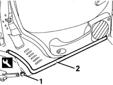

7010A46 lower rear side door seal r r
- Path
- Procedures > 70 FITTINGS > 7010 PASSENGER COMPARTMENT REAR SIDE DOORS > 7010A rear side door assembly > 7010A46 lower rear side door seal r r
- Kind
- repair procedure (removal / refitting; the operation number is the code)
- Applies to
- all engines; all production periods
- Interactive page
- https://sloeber94.github.io/elrnDB-fMltpl/en/#/2892072
Applies to: all engines; all production periods
 Removing
Removing
 Refitting
Refitting1. Remove the bottom seal retaining pins using the appropriate tool.
 | Name | Country |
|---|---|---|
1 | Scraper blade | 1.878.077.000 |
2. Remove the bottom seal.

Applies to: all engines; all production periods
Refitting
RemovingCheck that the bottom seal is intact and shows no signs of damage.
Fit the bottom seal.
Fit the new retaining pins and fit the seal.